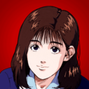

Redes Sociales
¡Si quieres comunicarte con el desarrollador visita sus redes sociales!
ICONOS - STAFF EQUIPOS
Gerente y ayudante deportivo Ayako

¡Si quieres comunicarte con el desarrollador visita sus redes sociales!